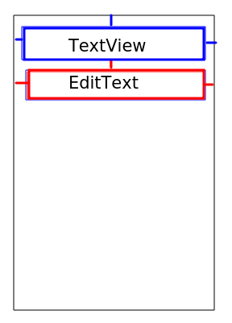
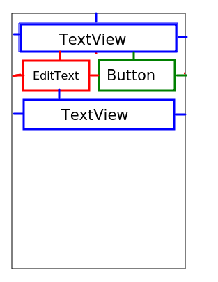
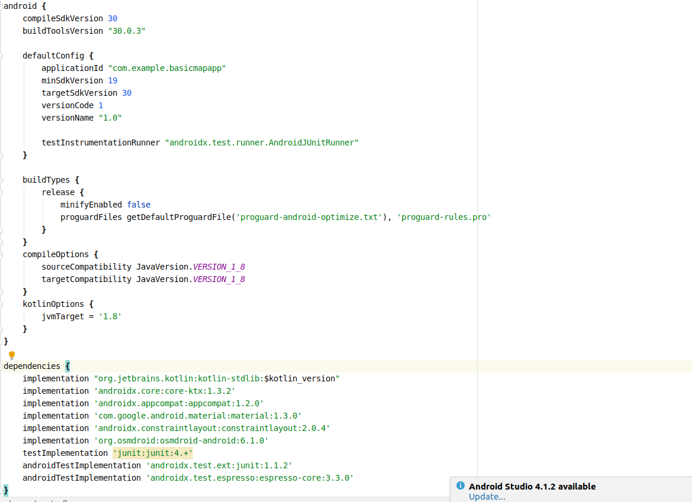
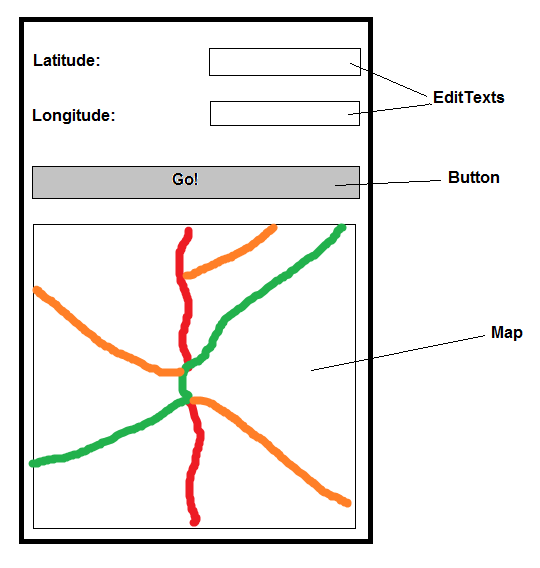

This week we will look at a range of further introductory topics including ConstraintLayout, the build.gradle file, Jetpack, adding third-party libraries and a quick introduction to mapping, which will preview material covered next week.
The ConstraintLayout is a more advanced layout manager than the simple LinearLayout that we looked at last week. With ConstraintLayout, more complex layouts can be created relatively simply in your XML. The idea is that we position elements by setting constraints - where they should be in relation to other elements
<androidx.constraintlayout.widget.ConstraintLayout xmlns:android="http://schemas.android.com/apk/res/android"
xmlns:app="http://schemas.android.com/apk/res-auto"
xmlns:tools="http://schemas.android.com/tools"
android:layout_width="match_parent"
android:layout_height="match_parent"
tools:context=".MainActivity">
<TextView
android:layout_width="0dp"
android:layout_height="wrap_content"
android:text="@string/pleaseEnterYourName"
android:textSize="12pt"
android:id="@+id/tv1"
app:layout_constraintLeft_toLeftOf="parent"
app:layout_constraintRight_toRightOf="parent"
app:layout_constraintTop_toTopOf="parent"/>
<EditText
android:layout_width="0dp"
android:layout_height="wrap_content"
android:id="@+id/et1"
app:layout_constraintLeft_toLeftOf="parent"
app:layout_constraintRight_toRightOf="parent"
app:layout_constraintTop_toBottomOf="@id/tv1"
/>
</androidx.constraintlayout.widget.ConstraintLayout>
This produces the layout below. Note that the constraints
are shown as lines connecting each element to either the parent (the
ConstraintLayout as a whole) or to another element. So the TextView is
constrained by the three blue constraints (the top to the top of the
parent, the left to the left of the parent, and the right to the right of the
parent) while the EditText is constrained by the three red constraints (the
top to the bottom of the TextView, the left to the left of the parent, and
the right to the right of the parent).

Explaining the XML in more detail: note how our top level layout is a ConstraintLayout and how we place a TextView and an EditText inside the ConstraintLayout. We position the TextView and EditText relative to each other and relative to the parent layout (the ConstraintLayout, which occupies the whole of the activity) using constraints.
Firstly, we will consider the TextView. Note its constraints:
app:layout_constraintLeft_toLeftOf="parent" app:layout_constraintRight_toRightOf="parent" app:layout_constraintTop_toTopOf="parent"To explain this (line by line):
Also note how the TextView has a layout width of 0dp (density-independent pixels; a measurement aimed to deal with different pixel-density screens). This is specifying that the constraints will be used to set the width. Note how the TextView's left and right sides are constrained to the left and right sides of the parent, so it is this that decides the width if the layout_width is set to 0dp.
We then place an EditText in the layout. This will appear below the TextView due to:
app:layout_constraintTop_toBottomOf="@id/tv1"which literally means constrain the edit text so that its top is at the bottom of the element with the ID of tv1 (i.e. the TextView)
<androidx.constraintlayout.widget.ConstraintLayout xmlns:android="http://schemas.android.com/apk/res/android"
xmlns:app="http://schemas.android.com/apk/res-auto"
xmlns:tools="http://schemas.android.com/tools"
android:layout_width="match_parent"
android:layout_height="match_parent"
tools:context=".MainActivity">
<TextView
android:layout_width="0dp"
android:layout_height="wrap_content"
android:text="@string/enterYourName"
android:textSize="12pt"
android:id="@+id/tv1"
app:layout_constraintLeft_toLeftOf="parent"
app:layout_constraintRight_toRightOf="parent"
app:layout_constraintTop_toTopOf="parent"/>
<Button
android:layout_width="wrap_content"
android:layout_height="wrap_content"
android:id="@+id/btn1"
android:text="@string/sayHello"
app:layout_constraintRight_toRightOf="parent"
app:layout_constraintTop_toBottomOf="@id/tv1"
/>
<EditText
android:layout_width="0dp"
android:layout_height="wrap_content"
android:id="@+id/et1"
app:layout_constraintLeft_toLeftOf="parent"
app:layout_constraintRight_toLeftOf="@id/btn1"
app:layout_constraintTop_toBottomOf="@id/tv1"
/>
<TextView
android:layout_width="0dp"
android:layout_height="wrap_content"
android:text="Enter feet:"
android:textSize="12pt"
android:id="@+id/tvResult"
app:layout_constraintLeft_toLeftOf="parent"
app:layout_constraintRight_toRightOf="parent"
app:layout_constraintTop_toBottomOf="@id/et1"/>
</androidx.constraintlayout.widget.ConstraintLayout>
This produces the layout below, again with the constraints shown:

This layout contains a text view at the top, a button and an edit text on the next line and a text view at the bottom. Note the constraints of the Button and the EditText:
ConstraintLayout is available as part of the Jetpack libraries, so include it into your project by specifying it in the build.gradle file (see below). However, by default, Android Studio adds it so you do not need to explicitly include it.
This example is inspired by the similar example from the Android documentation.
It is possible to set up constraints so that they "compete" against each other. For example, imagine this button:
<Button
android:layout_width="wrap_content"
android:layout_height="wrap_content"
app:layout_constraintLeft_toLeftOf="parent"
app:layout_constraintRight_toRightOf="parent"
app:layout_constraintBottom_toBottomOf="parent"
android:text="@string/click"
app:layout_constraintTop_toBottomOf="@id/tvResult" />
This button has a layout_width of wrap_content, so
it will only occupy as much width as needed to contain its text. However, note
that it has two competing constraints on its left and right side: om the left,
it's constrained to the left of its parent, but on the right, it's constrained
to the right of its parent. What will happen here is that both constraints will
pull the button in opposite directions, so that it appears in the centre of
the parent. This is shown below:
To make one competing constraint count more than the other, we can use constraint bias. For example, look at this code:
<Button
android:layout_width="wrap_content"
android:layout_height="wrap_content"
app:layout_constraintLeft_toLeftOf="parent"
app:layout_constraintRight_toRightOf="parent"
app:layout_constraintBottom_toBottomOf="parent"
app:layout_constraintHorizontal_bias="0.3"
android:text="@string/click"
app:layout_constraintTop_toBottomOf="@id/tvResult" />
Note how there is now a horizontal bias of 0.3 in the constraints.
This will mean that the left constraint will count more than the right
constraint, so that the button is centred at 0.3 of the total width of the
parent (rather than 0.5 by default), so that it appears towards the left, as
shown below:
We can also use app:layout_constraintVertical_bias in exactly
the same way, to control the bias of vertical constraints.
For more on ConstraintLayout, see the documentation on the Android developer site.
We are now going to take a look at the app's build.gradle file and examine key features of this build file, namely how to include third-party dependencies and how to set the minimum, compilation and target API levels.
Many Android apps depend on third-party libraries written by independent developers. Many of these are FOSS (free and open-source software) meaning, amongst other things, you can use them freely in your own projects. Dependencies are added to the build.gradle file.
You should link third-party dependencies to your app via the dependencies section of the build.gradle file. build.gradle is a build file: a set of instructions used by Gradle to create your app from your code and any third-party libraries it may require. Gradle is a standalone tool (can be used outside Android Studio, so you can build your apps with Gradle and without Studio if you wish), but is included within Android Studio.
Note there are two build.gradle files, one for the whole project and one for your app specifically. It is the latter (the app build.gradle; the second one as seen in Android Studio) that you need to edit. An app build.gradle is shown below.

The first example of libraries we will look at is Android Jetpack. Jetpack libraries are developed by the Android dev team but are separate to the mmain Android API. It is currently recommended, when developing for Android, to make use of Jetpack. Jetpack is a collection of libraries that add more specialised, and recently-developed, features to Android. Before API level 28, these features were included as part of the core Android API. However, because many new features were added to Android after API leve 22 (Android 5.x upwards) at a time when many devices were still running older versions of Android, a problem arose in that many devices could not use these newer features by default. Consequently, the appcompat library was maintained to provide these new features to older Android versions, however because new features were added all the time, it became rather unmanageable.
Consequently, Jetpack was created. The philosophy of Jetpack is to focus the core Android API on the core, less-frequently-updated features and add the newer, more specialised, more rapidly-changing features in separate Jetpack libraries. This allows older devices to support new features in a "clean" way: an older version of the core API can work together with the latest versions of Jetpack libraries to produce an app with many new and interesting features but which can run on older Android versions. Jetpack libraries belong to androidx packages.
The use of Jetpack also cuts down the size of the app if not all Jetpack features are desired, as we only link in those Jetpack libraries we need.
Examples of Jetpack components include:
Jetpack libaries need to be added to the dependencies section of your app's build.gradle. Some are added already: if you look at the build.gradle example above, all the dependencies beginning with androidx are Jetpack libraries, for example the AppCompat and ConstraintLayout libraries:
implementation 'androidx.appcompat:appcompat:1.2.0' implementation 'androidx.constraintlayout:constraintlayout:2.0.4'
The next thing we are going to look at in the build.gradle are the sdkVersion specifiers. Note the three lines showing compileSdkVersion, minSdkVersion and targetSdkVersion. What do these represent?
minSdkVersion is the easiest of the three to understand. It represents the minimum API level needed to run your application. So for example if minSdkVersion is 19, then your app will only run on Android 4.4 (KitKat) upwards, because API level 19 is equivalent to KitKat.compileSdkVersion represents the API the software is compiled against. If you use features from a recent API level, but the compileSdkVersion is lower, then your code will not compile because your code is being compiled against an older version of the API, one without the recent features. Note that if, on the other hand, you set the compileSdkVersion to a recent version of Android and use features from a recent API level (e.g. API 30) then try to run it on a device running an older version of Android, the code will crash with a runtime error. (However, in Android Studio, the lint code analysis tool will pick up attempts to use recent API features if the minSdkVersion is below the API level needed for the feature).targetSdkVersion represents the SDK the app is targeting. This defines what standards will be followed when you build your project; in other words, are you using the recommended features of an up-to-date version of Android or an older one? For example, occasionally Android API features are marked as deprecated (outdated) at a certain API level (for example 26), because it is recommended you replace the feature with a newer approach to doing the same task. If your targetSdkVersion is that API level (26 for example) or higher, and you try to use the deprecated feature, you will get a warning. However, if your targetSdkVersion is lower than this (25 or less, for example), you will not. targetSdkVersion is 23 or more, you will not be able to perform sensitive operations in your code without runtime permission checking - the app will crash with a SecurityException. (Again, the lint tool will detect this in Android Studio before you attempt to deploy it). If, however, the targetSdkVersion is 22 or less, you will not have to implement runtime permission checking, even if running on a device running Marshmallow (API 23) or greater.targetSdkVersion. This is a signal that your app is using outdated APIs, which may be completely dropped in the future; and furthermore, to publish on Google Play, the targetSdkVersion needs to be recent - usually the version before the current version, so currently 29 - otherwise it cannot be published).We can also make use of third-party libraries in our apps by adding them to build.gradle as dependencies. These are libraries developed by people other than the Android developer team. We are going to look at a mapping library called osmroid.
We are going to add the osmdroid mapping library to our app as an example of a dependency. This will allow us to add a map to our main activity. It can be added to the dependencies section of the app's build.gradle as an additional dependency:
implementation 'org.osmdroid:osmdroid-android:6.1.0'
Where is the OSMDroid library coming from? If you have used a build system such as Maven in standard Java, you might recognise the technique used. It downloads the OSMDroid library from an online repository of Java libraries. The specific repository used by default is Bintray JCenter, which can be found here. Another common repository (which you will have come across if you have studied OODD) is Maven Central.
Once the dependency has been downloaded, it will be saved on your computer so that it will not need to be downloaded next time you open the project.
The repositories used are specified in the project build.gradle file (the other one; the first build.gradle in the project view of Android Studio); you'll notice the jcenter() line in there which specifies that JCenter is being used.
Most location-based apps include a map as the content view of their main activity. Android comes with inbuilt map functionality via Google Maps; however to use Google Maps you need to obtain an API key and it comes with some restrictions so we are going to use an alternative mapping library: osmdroid, available here. (A library is a collection of Java classes with related functionality, such as mapping). As a Java library, you can use it in a Kotlin app.
osmdroid is a third-party open source library which uses maps from the OpenStreetMap project. OpenStreetMap is a global project to provide free and open mapping data which anyone can contribute to; see the website for more details. In using osmdroid, you will also see how to add external libraries to an Android project.
In order to understand location-based applications, it is important to understand the coordinate system used on the earth. The most common coordinate system uses latitude and longitude. Latitude is a measure of how far north or south you are: the equator is at 0 degrees, while the North Pole is at 90 degrees North, we are at about 50 and Spain is at about 40. Longitude is a measure of how far east or west you are: 0 degrees of longitude is referred to as the Prime Meridian (or Greenwich Meridian) and passes through Greenwich, London. By contrast Germany is located between approximately 7 degrees and 15 degrees East, while New York is at 74 degrees West and the west coast of North America at approximately 120 degrees West.
So a given point on the earth can be defined via its latitude and longitude. The university is at approximately, 50.9 North (latitude) and 1.4 West (longitude). By convention, latitudes north of the equator and longitudes east of Greenwich are treated as positive, so we can also define our position as longitude -1.4, latitude +50.9.
Here is a sample app using the OSMDroid Android API
Copy-and-paste this code into your Mapping project's MainActivity.kt.
package com.example.mapping
import androidx.appcompat.app.AppCompatActivity
import android.os.Bundle
import android.preference.PreferenceManager
import org.osmdroid.config.Configuration
import org.osmdroid.util.GeoPoint
import org.osmdroid.views.MapView
class MainActivity : AppCompatActivity() {
override fun onCreate(savedInstanceState: Bundle?) {
super.onCreate(savedInstanceState)
// This line sets the user agent, a requirement to download OSM maps
Configuration.getInstance().load(this, PreferenceManager.getDefaultSharedPreferences(this));
setContentView(R.layout.activity_main)
val map1 = findViewById<MapView>(R.id.map1)
map1.controller.setZoom(14.0)
map1.controller.setCenter(GeoPoint(51.05, -0.72))
}
}
The main XML layout file is here. Copy and paste it into activity_main.xml.
<LinearLayout xmlns:android="http://schemas.android.com/apk/res/android"
android:orientation="vertical"
android:layout_width="match_parent"
android:layout_height="match_parent">
<org.osmdroid.views.MapView
android:layout_width="match_parent"
android:layout_height="match_parent"
android:enabled="true"
android:clickable="true"
android:id="@+id/map1"
tilesource="Mapnik"
/>
</LinearLayout>
Note how this is working:
The manifest file is an XML file describing the app and its components
(e.g. the activities making up the app), as well as the app
permissions (see below). It is called AndroidManifest.xml
and can be found in the manifests directory.
Apps need to be granted permissions to perform sensitive operations. Sensitive operations can include:
We will look at permissions in more detail next time. For now, we just need to add one permission to the manifest file:
<uses-permission android:name="android.permission.INTERNET" />
This exercise allows you to revise the previous topics.
Enhance your
app so that it has a UI with a layout similar to that shown below. Create the XML by hand as a ConstraintLayout; do not use the UI designer.

When the user clicks "Go", the map should move to the latitude and longitude
that the user entered in the two EditTexts.